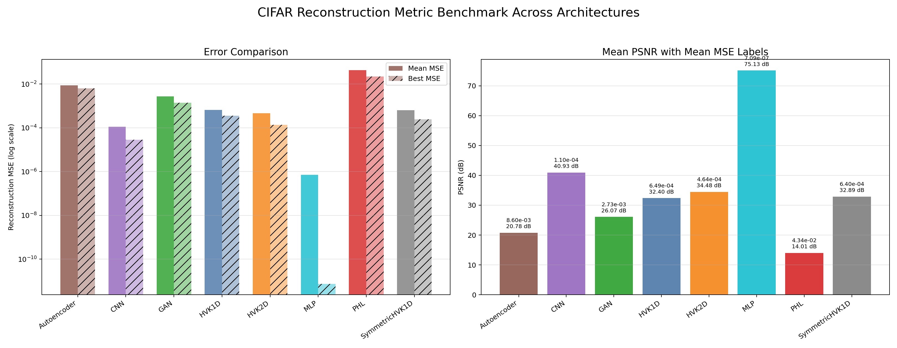
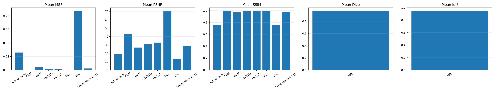
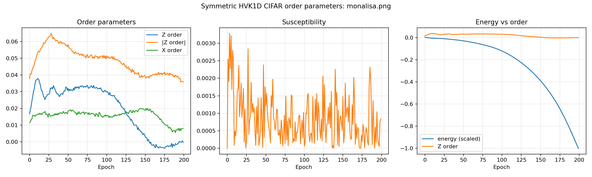
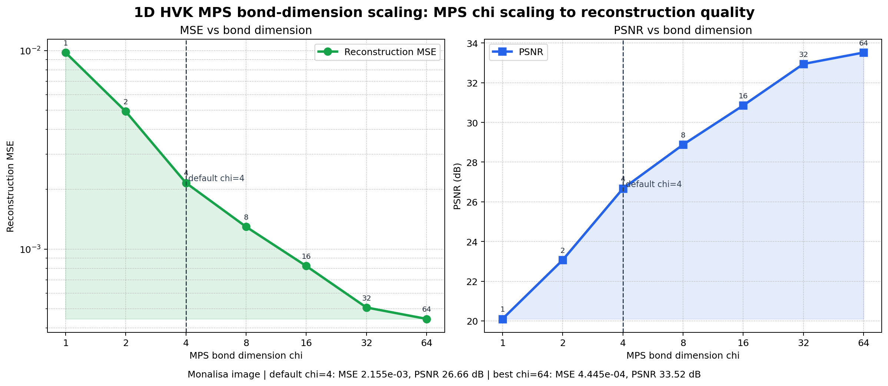

Patch Representation
Images are split into local patches and represented through MPS-style feature extraction.
A research codebase for image reconstruction with tensor-network patch features, positional encodings, variational quantum observables, and Hamiltonian energy regularization.
The current experiments cover HVK1D, HVK2D, Symmetric HVK1D, classical baselines, CIFAR-10 subset metrics, Mona Lisa reconstruction metrics, and a small IBM Heron hardware probe.
The project is a runnable research repository. It is not presented as a production service or as a full real-hardware reconstruction system.
Images are split into local patches and represented through MPS-style feature extraction.
Small circuits produce Pauli observables and correlation channels used by the decoder.
Training tracks reconstruction loss, energy, order parameters, susceptibility, and hardware proxy signals.
These values summarize the committed benchmark artifacts and the current manuscript. IBM Heron values are hardware proxy measurements, not decoded image reconstructions.
Five grayscale 32x32 samples, 200 epoch comparison suite.
Unified baseline suite with CNN, MLP, autoencoder, GAN, PHL, and HVK variants.
64 patch circuits, 100 shots each, measured on an IBM Heron backend.
| Track | Role | Reported evidence |
|---|---|---|
| HVK1D | Linear-chain control | Reconstruction metrics and order-parameter tracking |
| Symmetric HVK1D | Mirror-tied Hamiltonian couplings | CIFAR/Mona Lisa metrics and symmetric order diagnostics |
| HVK2D | Patch-grid topology | Best HVK reconstruction trend and Heron patch-proxy run |
All links below point to committed files under docs/assets.

Mean/best error and PSNR across HVK and baseline architectures.

Unified metric comparison for the single-image benchmark.

Hamiltonian order-parameter tracking for the symmetric chain variant.

Effect of MPS bond dimension on the 1D feature representation.
Effect of MPS bond dimension on the 2D feature representation.

Reconstruction, energy, and total loss traces.
Commands used for local validation and reproducibility.
python -m ruff check .
python -m unittest discover -s testspython Baselines\cifar10_comparisons\main.py --methods hvk1d hvk2d symmetric --count 5 --epochs 200 --device autopython IBM_Cloud\run_ibm_epoch_probe.py --dataset IBM_Cloud\datasets\monalisa_patches.npz --variant hvk2d --backend ibm_fez --shots 100 --max-patches 64